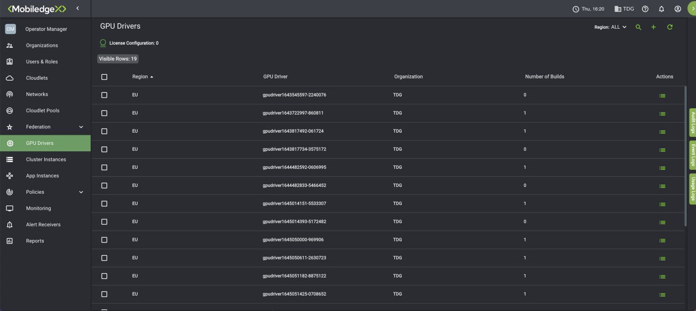
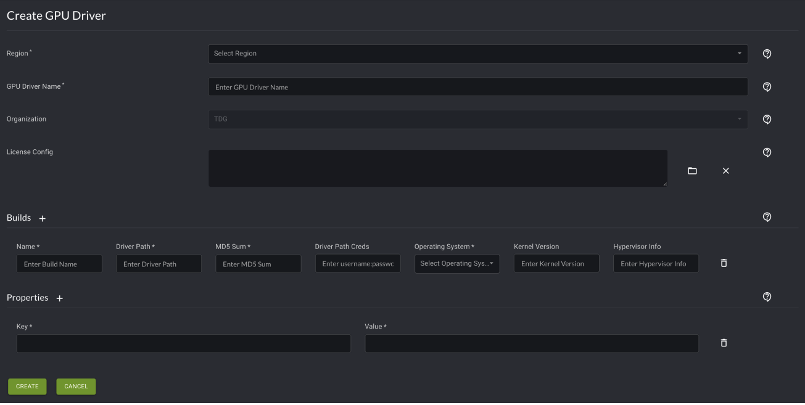
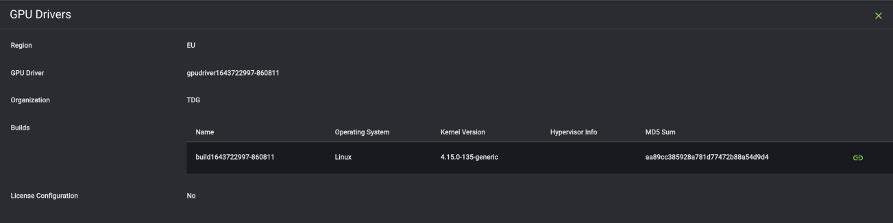
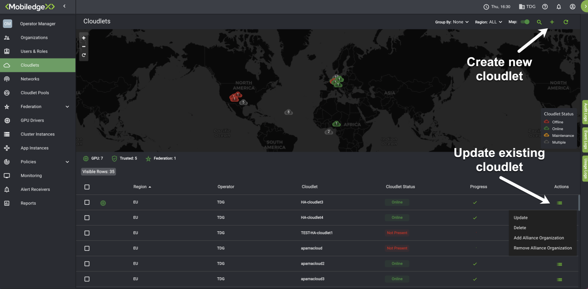
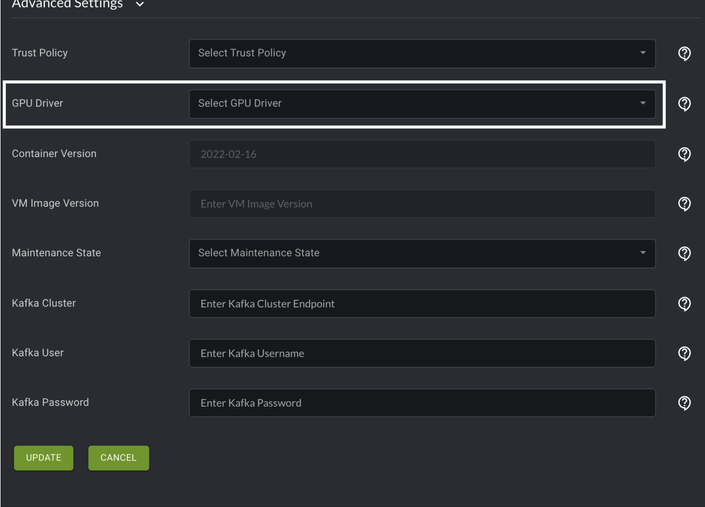
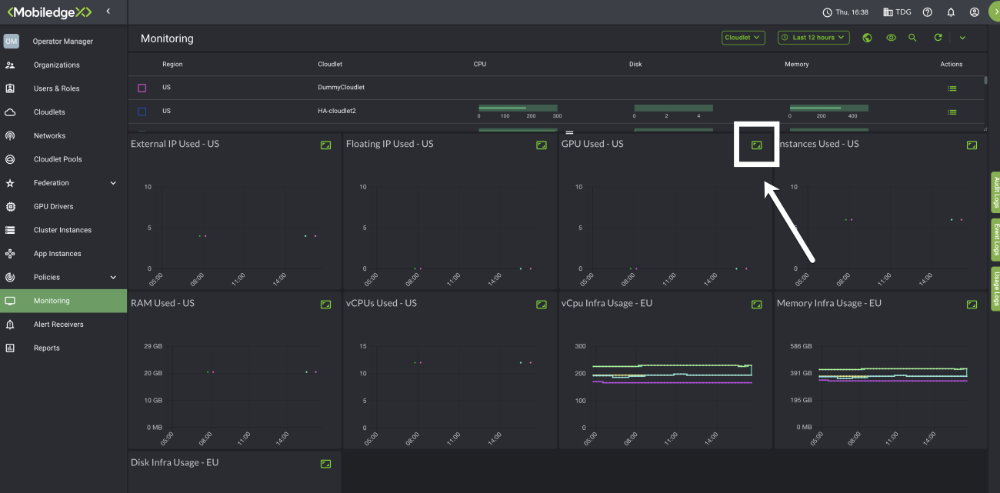
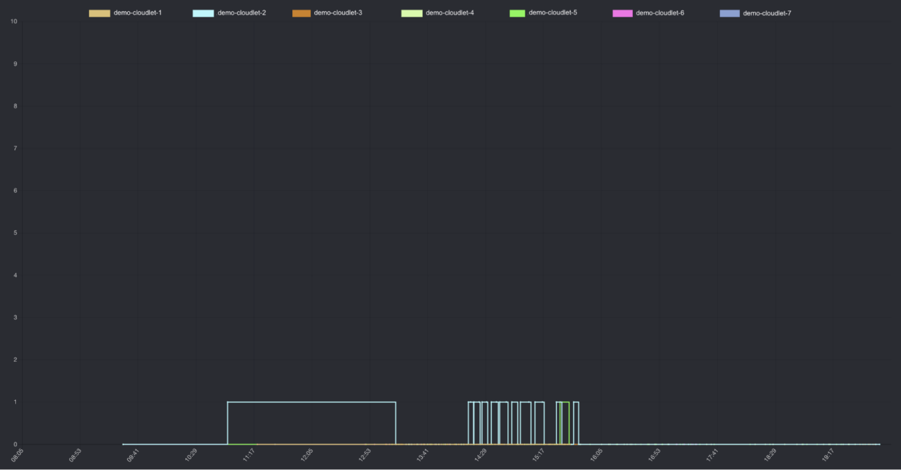

Manage GPU Drivers for Cloudlets¶
Graphics processing units (GPUs) provide a much needed role in accelerated image and graphics processing, and at the edge, GPUs can assist in providing lower network latency as well. It is often difficult for operators to maintain environments of GPUs, GPU drivers, hypervisors, and operating systems that interact with each other. For this reason, the MobiledgeX EdgeCloud platform simplifies this management process, allowing for easily accessible GPUs at the edge.
Operators can simplify GPU management and easily offer GPU accessibility at the edge. Most of this feature is automated, and thus, reducing any requirements to manually set up. For instance, we handle driver installation (and licenses) on the developer cluster virtual machines (VMs); the only manual step required by operators (on VCD only) is to attach the GPU to the cluster VM.
In this article, you will learn how to use the MobiledgeX Edge-Cloud Console to create a GPU driver, associate it with a cloudlet, and view usage statistics for your GPU resources.
Simplified Management for Operators¶
Step 1. Creating a GPU driver¶
The following section provides steps on how create a GPU driver from the console and add various builds to it.
Note: Multiple builds of the same GPU driver can be maintained for various operating systems, hypervisors, kernel versions, etc. The Kernel Version in a build determines which build to use with which base image, so you can have the same driver config for multiple cloudlets that use different base images.
-
In the MobiledgeX Edge-Cloud Console, select GPU Drivers from the left navigation. The GPU Drivers menu opens. This menu will show you your GPU Drivers and their license configurations if applicable, shown in the screenshot.

-
Select the plus sign icon. The Create GPU Driver menu opens.

Note: You can optionally add a License Config if you need your GPU driver to perform specialized tasks. The License Config tells the Cloudlet Resource Manager where to pull the license file from to add to GPU-enabled VMs. Here is an example License Config:
# /etc/nvidia/gridd.conf.template - Configuration file for vGPU Licensing Daemon
# This is a template for the configuration file for vGPU Licensing Daemon.
# For details on the file format, please refer to the nvidia-gridd(1)
# man page.
# Description: Set License Server Address
# Data type: string
# Format: "<address>"
ServerAddress=XX.XX.XX.XX
# Description: Set License Server port number
# Data type: integer
# Format: <port>, default is 7070
ServerPort=
# Description: Set Backup License Server Address
# Data type: string
# Format: "<address>"
#BackupServerAddress=
# Description: Set Backup License Server port number
# Data type: integer
# Format: <port>, default is 7070
#BackupServerPort=
# Description: Set Feature to be enabled
# Data type: integer
# Possible values:
# 0 => for unlicensed state
# 1 => for NVIDIA vGPU
# 2 => for NVIDIA RTX Virtual Workstation
# 4 => for NVIDIA Virtual Compute Server
# All other values reserved
FeatureType=1
# Description: Parameter to enable or disable vGPU Licensing tab in nvidia-settings
# Data type: boolean
# Possible values: TRUE or FALSE, default is FALSE
#EnableUI=TRUE
# Description: Set license borrow period in minutes
# Data type: integer
# Possible values: 10 to 10080 mins(7 days), default is 1440 mins(1 day)
#LicenseInterval=1440
# Description: Set license linger period in minutes
# Data type: integer
# Possible values: 0 to 10080 mins(7 days), default is 0 mins
#LingerInterval=10After you have inputted all mandatory and relevant information, select Create at the
bottom of the page.
| Builds Textbox | Example entry |
|---|---|
| Name: | Arbitrary but meaningful name |
| Driver Path: | Path to a URL where MobiledgeX can download the driver file from. This can be an account in MobiledgeX Artifactory or some other authenticated or public repository, such as an S3 bucket. |
| MD5 Sum: | MD5 Sum For file in the above path |
| Driver Path Creds: | In form username:password . Only needed if Path above points to a private repository that requires credentials, such as MobiledgeX Artifactory. |
| Operating System: | Linux |
| Kernel Version: | Please ask MobiledgeX Support for this value as it depends on the base image version being used in the cloudlets. |
| Hypervisor Info: | Not currently required |
For each build specified, MobiledgeX will, if required, perform a one-off pull of the driver and then upload it to our
storage.cloud.google.com account. The credentials are not stored or retained anywhere. Here’s the detailed information of the driver we just created:

The MobiledgeX platform can support multiple builds for a single GPU driver to enable the correct driver to be installed for different kernel versions. All drivers and their license configurations are cached in a secure storage which operators and MobiledgeX admins will not be able to access. They are only accessible by users belonging to the operator organization and developers belonging to the cloudlet pool.
Step 2. Associate a GPU driver with a cloudlet¶
There are two ways to initiate associating a GPU driver with a cloudlet: * Update an existing an cloudlet * Create a new cloudlet
- Begin by selecting Cloudlets on the left navigation. The Cloudlets menu opens.
-
If you have a cloudlet you would like to update and associate with a GPU Driver, select the dropdown icon in the Actions column of the corresponding cloudlet. Then, select Update from the dropdown menu. Otherwise, if you have to create a new cloudlet, select the plus sign icon in the top right of the menu. Both of these options will allow you to input and edit information about your cloudlet.

-
Scroll down to the Advanced Settings submenu, and toggle the arrow to open it. Inside, you will see an option to set a GPU Driver. Select the GPU driver you prefer. Then, select Create or Update at the bottom of the Create Cloudlet or Update Cloudlet menu respectively.

Once a GPU driver is associated with a cloudlet, MobiledgeX services will automatically select and install matching drivers for application deployments based on Kubernetes and Docker. It will also automate license configuration wherever applicable. Automated deployment of drivers for VM deployments is not currently supported.
Step 3: Monitor usage statistics for GPU resources across cloudlets¶
Operators are provided with statistics on the count of GPUs used across their cloudlets. This gives operators a better insight into the usage pattern of GPUs that can help with cost optimization. This can be viewed in the Monitoring section of the MobiledgeX Edge-Cloud Console.
MobiledgeX provides insight into GPU usage across cloudlets, so operators can understand usage patterns and help with cost optimization.
- Select Monitoring in the left navigation of the Console.
-
You will see tiles representing all monitoring metrics available. Scroll until you see a tile labeled "GPU Used" with the appropriate region (US or EU) after it. Select the Maximize icon in the top right corner of the tile. The Monitoring report for your GPU will go fullscreen.

-
You can now view usage metrics for your GPU.
